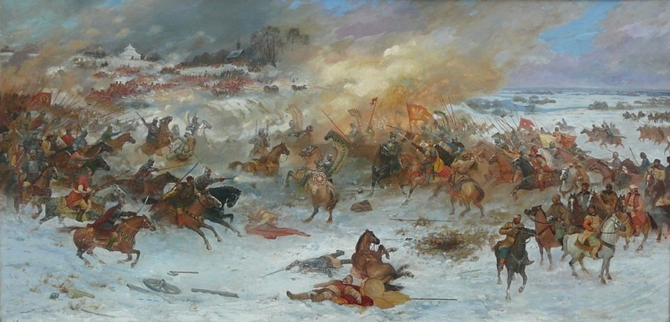
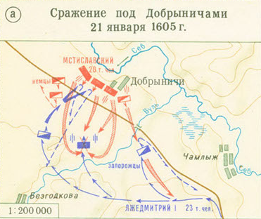
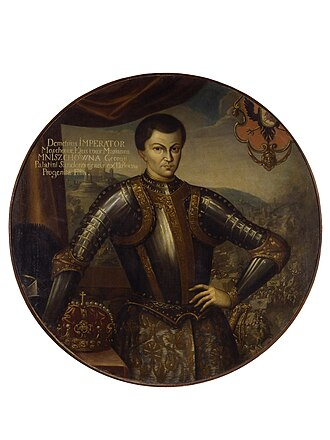
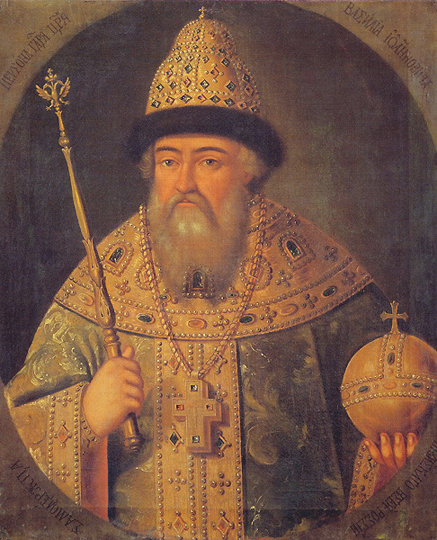
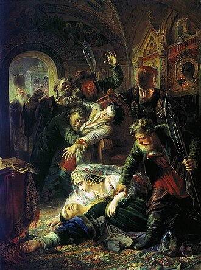

Лжедмитрий I
С началом Смуты распространились слухи о том, что законный царевич Дмитрий жив. Из этого следовало, что правление Бориса Годунова незаконно. Самозванец Лжедмитрий, объявивший западнорусскому князю Адаму Вишневецкому о своём царском происхождении, вошёл в тесные отношения с польским магнатом, воеводой сандомирским Ежи Мнишеком и папским нунцием Рангони. В начале 1604 года самозванец получил аудиенцию у польского короля и вскоре принял католицизм. Король Сигизмунд III признал права Лжедмитрия на русский трон и разрешил всем желающим помогать «царевичу». За это Лжедмитрий обещал передать Польше Смоленск и Северские земли. За согласие воеводы Мнишека на брак его дочери с Лжедмитрием тот также обещал передать своей невесте во владение Новгород и Псков. Мнишек снарядил самозванцу войско, состоящее из запорожских казаков и польских наёмников («авантюристов»). В 1604 году войско самозванца пересекло границу России, многие города (Моравск, Чернигов, Путивль) сдались Лжедмитрию, войско московского воеводы Фёдора Мстиславского было разбито в битве под Новгородом-Северским. Однако другое войско, отправленное Годуновым против самозванца, одержало убедительную победу в битве под Добрыничами 21 (31) января 1605 года.


Командовал московским войском знатнейший боярин — Василий Шуйский. Царь вызвал Шуйского, чтобы щедро наградить. Во главе армии был поставлен новый воевода — Пётр Басманов. Это было ошибкой Годунова, так как вскоре оказалось, что самозванец жив, а Басманов — ненадёжный слуга. В разгар войны Борис Годунов скончался (13 (23) апреля 1605 года); армия Годунова, осаждавшая Кромы, практически немедленно изменила его преемнику, 16-летнему Фёдору Борисовичу, который был свергнут 1 июня и 10 июня убит вместе с матерью. 20 (30) июня 1605 года под всеобщее ликование самозванец торжественно вступил в Москву. Московское боярство во главе с Богданом Бельским публично признало его законным наследником и князем Московским. 24 июня рязанский архиепископ Игнатий, ещё в Туле подтвердивший права Дмитрия на царство, был возведён в патриархи. Законный же Патриарх Иов был смещён с патриаршей кафедры и заточён в монастырь. 18 июля в столицу была доставлена признавшая в самозванце своего сына царица Марфа, а вскоре, 30 июля, состоялось венчание Лжедмитрия I на царство. Царствование Лжедмитрия было ознаменовано ориентацией на Польшу и некоторыми попытками реформ. Не всё московское боярство признало Лжедмитрия законным правителем. Почти сразу после его прибытия в Москву князь Василий Шуйский через посредников начал распространять слухи о самозванстве. Воевода Пётр Басманов раскрыл заговор, и 23 июня (3 июля) 1605 года Шуйского схватили и осудили на смерть, помиловав лишь непосредственно у плахи. На свою сторону Шуйский привлёк князей Василия Васильевича Голицына и Ивана Семёновича Куракина. Заручившись поддержкой стоявшего под Москвой новгородско-псковского отряда, который готовился к походу на Крым, Шуйский организовал переворот. В ночь с 16 на 17 (27) мая 1606 года боярская оппозиция, воспользовавшись озлоблением москвичей против явившихся в Москву на свадьбу Лжедмитрия польских авантюристов, подняла восстание, в ходе которого самозванец был жестоко убит. Приход к власти представителя суздальской ветви Рюриковичей боярина Василия Шуйского не принёс успокоения. На юге вспыхнуло восстание Ивана Болотникова (1606—1607), которое, в свою очередь, породило движение «воров».


.jpg)
